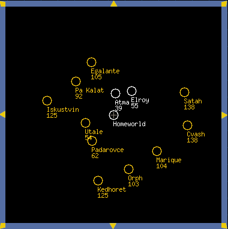

World Information Pages
Each world has its own World Information Page. You can see all worlds, whoever owns them, but you get more information about your own worlds.
If you own the world, this is where you issue orders for production on that world, and fleet movement from that world. You can also review the star map, pick worlds to attack, and scan for intruders.
If the world is owned by another player or by Nobody, you cannot issue orders there, or see what is being produced. You will see all units on the world, except for Hurax Stealth Fighters, but you won't see how they are organized into fleets.
Regardless of who owns the world, you will be able to see its EI and RER values and view all past battles.
To view any World Information page, click that world on the Star Map, or click its name in any report. To access the World Information page for your homeworld from anywhere within UltraCorps, click the HOMEWORLD button on the navigation bar.
On a busy world, this page can be long, but links near the top let you jump down instantly to Scanners, Production, Battles, or Notes.
The graphics below take you step-by-step through various sections of the World Information page, with links to more information on each area. For details, click the Next button at the bottom of this page.
Overview
To the right is data on the selected world. If you own the world, you can assemble fleets and place production orders here. If you don't own it, you can see what units are present and see battles that occurred there.
)window.location='http://ultracorps.sjgames.com/help/screenshots/world.png')
The Star Map
The Star Map always appears to the left of a World Information page. Every circle represents a world. Yours are white. Unowned ones are yellow, and red ones belong to other players. You can assign other colors to chosen empires on their Empire pages.
The Star Map is always centered on one world. All other worlds have a number showing their distance from that world. To center the map on the world whose information page you are viewing, click the Center Map link at the top of the World Information panel.

Click any world on the map to display its World Information page.
Use the arrows and zoom buttons below the map to navigate, and to pick a close-up view or to back off for a more strategic picture.
World Information
- When a world is selected, its World Information page displays. At the top is the world's name, the owner's name (click to display his Empire), and the icon for his race.
- You will also see a world image and "planetary type." Currently, these have no effect on play. They're just pretty.
- Below are the world's EI and RER ratings, which determine how much population and Ultranium it produces every tick.
- Beneath EI and RER, you'll see the world's Firepower number. This is an indicator of the total combat effectiveness of all units present at the world right now.
- Click Center Map to center the world on the Star Map and show its distance to other worlds. Click
 for help.
for help.
)window.location='http://ultracorps.sjgames.com/help/screenshots/worldinfo.png')
Fleets
Units must be grouped into fleets to move from one world to another. When a fleet is located at a world, it will show up on the World Information page. There are several types of fleets:
Auto Fleets
Auto Fleets automatically transport cargo between two of your worlds. Auto fleets are clearly labeled on a yellow bar.

Gift Fleets
Gift Fleets are non-combat fleets. You can send them to allies as presents or in trade. When Gift Fleets arrive at their destination world, they don't fight. They become the property of the world's owner (whoever it is at the moment). Gift fleets are also clearly labeled on a blue bar.

Combat Fleets
Combat Fleets are the meat and potatoes of UltraCorps. You assemble and deploy them to attack and take over other worlds. Combat fleets are on a maroon bar.

Base Fleets
Every world has a base fleet. This is usually where the world's Ultranium and population will be (if not, they cannot be used in production). Some defensive units perform better in the Base Fleet. Newly created units appear in the Base Fleet. When you create other fleets, you transfer units from the Base Fleet into the new fleet. Notice the Make New Fleet and Show All Fleets buttons located above and below the base fleet: clicking these lets you make new fleets and view existing ones.

Scanners
Use the Scanners section to see any incoming and outgoing fleets. Depending on your scanner's range, you can see incoming and outgoing fleets from 25 to 420 units away. You can always see your own fleets coming to or leaving the world, regardless of how far away they are, and you can click them to see what units they contain. If you don't own a fleet, you'll only see its name, the world where it originated, and how far it is from its destination.

Production
To conquer the universe, you need to produce more units to enlarge your fleets and defend your worlds. The Production section helps you keep tabs on what's finished, what's in production, and what's in the queue. Click New Order to place new orders or to access the Design License page.

Battles
The Battles section lists all battles that have occurred at this world. Each entry shows the turn number when the battle occurred, who fought, and who won. Clicking one takes you to the round-by-round battle review.

Notes
The Notes section lets you add a note for each world you own. You may edit it freely. No one but you can see your world notes.
Subtopics:
The Star MapShow All Worlds
Fleets
Auto Fleets and Gift Fleets
Show All Fleets
Scanners
Show All Scanners
Unit Production
Licenses
Upgrades
Show All Production
World Notes